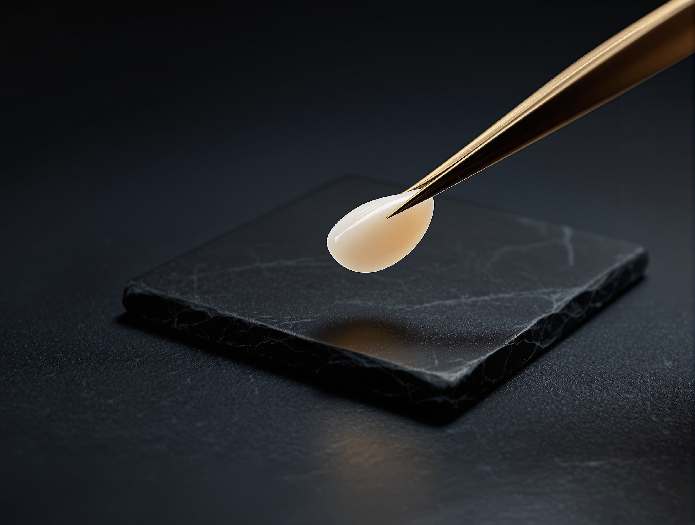

It is planned work, not a single appointment. Your dentist assesses the teeth, the gumline and the way your face frames them, then agrees the design with you before anything is prepared.
The plan is drawn against a scan of your actual face, and it is carried out by dentists who sit alongside the orthodontists, prosthodontists and periodontists this kind of work often needs.
Almost every decision in this field starts as one of two questions.
The two axesA shade guide and a tooth model, the instruments of each question.
What the two questions route to, in starting-price order
Composite or Direct VeneersZoom Teeth WhiteningPorcelain VeneersZirconia Veneers
Question oneShade
Is it the color that has changed?
Teeth darken with age, coffee, tea and tobacco. If the edges are intact, the proportions are right and only the shade has moved, then nothing needs to be added to the tooth. That is the shortest route in this field and the one that removes the least.
Chips, worn edges, small gaps, a tooth that reads narrow or short beside its neighbors, old composite staining at the margins. Changing form means adding a surface to the tooth, and that is the veneer family: composite, porcelain or zirconia.
Cosmetic dentistry is the restorative and aesthetic layer of your care. It addresses how a tooth looks, how it sits next to the tooth beside it, and how the whole set reads against your lips and jawline.
Shade. Teeth that have darkened with age, coffee, tea or tobacco.
Shape. Chipped, worn or uneven edges.
Shape. Small gaps between the front teeth.
Shape. Teeth that are narrow, short or out of proportion with their neighbors.
Shape. Old composite work that has stained at the margins.
Shade or shape. Front teeth that are structurally sound but do not match.
Assessed first. A gumline that sits high or low against the teeth.
The row the list cannot route
A front tooth that looks wrong is often not a cosmetic problem.
It is often a bite problem, a gum problem or an alignment problem wearing a cosmetic disguise. Cosmetic dentistry is one of the dental disciplines Elevate Dental holds in-house, alongside general dentistry, orthodontics, endodontics, periodontics, prosthodontics, oral surgery, pediatric dentistry and dental radiology. When your assessment finds one of those, the orthodontist or the periodontist who handles it works in the same practice, on the same file, and the plan is revised once rather than restarted.
What is assessedEdges, proportion and the gumline, read together.
03
Treatments in this field
The four routes, side by side
Four treatments sit inside this discipline. They are not four versions of one thing: they change different properties of the tooth, they ask different things of it, and they are quoted differently.
Route 01Shape
Composite or Direct Veneers
Composite shaped directly onto the tooth and cured in a single visit. Reversible, quicker, and repairable in the chair.
In-clinic Zoom whitening, light-activated and completed in one session, with steps taken to limit sensitivity during and after treatment. Shade change depends on the enamel you start with and the cause of the discoloration.
Zirconia shells for cases that need more strength than porcelain, and that resist staining better than composite. Your dentist will tell you which material suits your bite.
The same four routes on the axes that actually separate them. Read down a column, not across a brochure.
Cosmetic routes compared. Every peso figure below is a representative market figure, not an Elevate price.
Treatment
Material
What it changes
Reversible
Quoted per
Starting price
Direct composite
Composite, shaped and cured in the chair
Shape, edge and shade
Yes. Reversible, and repairable in the chair
Tooth
From₱12,000Indicative market figure
Zoom whitening
Light-activated in-clinic whitening
Shade only
Nothing is added to the tooth
Session
From₱25,000Indicative market figure
Porcelain veneers
Emax porcelain shells, made to a facial scan
Shape, edge, proportion and shade
Confirmed at assessment
Tooth
From₱35,000Indicative market figure
Zirconia veneers
Zirconia shells, made to a facial scan
Shape, edge, proportion and shade
Confirmed at assessment
Tooth
From₱38,000Indicative market figure
Market figures, not Elevate prices
What a matrix cannot decide
Every row above is true of the treatment in general. None of it is true of your teeth until someone has looked at them. Two people can arrive with the same complaint and leave with different routes, because the bite underneath, the gum around it and how much sound tooth is left are what actually choose.
Veneer cases are quoted per tooth, so the number of teeth in your design changes the total. The final fee depends on case complexity and is confirmed at consultation.
How much of the front surface a porcelain or zirconia veneer requires is confirmed at your assessment rather than stated here.
All four figures are representative market figures anchored to published Philippine market ranges, not to an Elevate Dental price list. Your own figure is quoted after a clinical assessment.
05
The honest half
When the answer is to treat something else first
A cosmetic case rarely stays cosmetic. Two conditions decide whether a design should be built now or after something underneath it has been dealt with.

AssessmentThe bite and the gumline are read before the design is drawn.
ProceedNow
Build the design now when
the teeth under it are structurally sound, the bite is closing evenly, and the gumline already sits where the restoration will need it to sit. Then the remaining questions are material and proportion, and those are design questions your dentist settles with you against a scan of your face.
Assess firstNot yet
Treat something else first when
the bite is closing unevenly, or the gumline is uneven. Veneers on a bite that is closing unevenly will chip. A gumline that is uneven will show through any restoration placed under it. In a single-dentist practice each of those is a referral out and a plan begun again.
Why a hub page says this out loud
Being told to treat the bite or the gum before the veneers is not a delay and it is not an upsell. It is the difference between a design that holds and a design that fails at the margin in its first year, and you are better served hearing it on this page than at the chair with a treatment plan already drawn.
Here the prosthodontist, the orthodontist and the periodontist are colleagues on the same case, so a finding like that revises your design in one conversation rather than restarting it somewhere else.
06
The specialists in this field
Who else is in the room
Every dentist at Elevate Dental is published by name and by discipline, so you can read who is designing your case before you commit to it. Filter the specialist index to cosmetic dentistry to see the dentists who work in this field.
These are the four disciplines a cosmetic case most often turns out to need, and each of them is held in the same practice, on the same file.
If the position is the problem
Orthodontics
A tooth that sits out of line is moved rather than covered. Where alignment is the real complaint, moving the tooth changes less of it than adding a surface to it does.
The gum and the bone the restoration sits against. An uneven gumline shows through any veneer placed under it, so it is treated before the design is built rather than after.
Decay, old fillings and the routine work that has to be sound before anything cosmetic is bonded to a tooth. It is the first thing an assessment looks for.
Cosmetic work is measured before it is made. These systems are installed at Elevate Dental and used to plan it and to check it.
01
RayFace facial scanner
A 3D facial scanner used to plan veneers, crowns and smile design against the proportions of your actual face, rather than against the tooth in isolation.
02
iTero intraoral scanner
A digital scan of your teeth in place of putty impression trays. The scan is the record your veneers are made to.
03
OccluSense bite analysis
Digital pressure mapping that shows where your teeth actually meet, checked before new surfaces are fitted so the force lands where it should.
04
Zoom whitening
Light-activated in-clinic whitening, used on its own or to set the shade the rest of a case is matched to.
Imaging
3D CBCT imaging is available at all four clinics: Mitsukoshi BGC, Shangri-La Plaza, Bonifacio Stopover BGC and Alabang Town Center. It is used when the design sits on a tooth whose root or bone support needs assessing first, so the question is answered in the same building as the consultation.
Shade guideThe shade is chosen against a graduated scale, not by eye.
08
Paying for it
One condition that is not a matter of preference
Elevate Dental does not accept HMO or dental insurance. All treatment is self-pay.
HMO coverage cannot be used for dental treatments at our clinics. That is stated here, beside the figures, because finding it out late, halfway through a treatment plan, is worse than reading it now.
What the figures on this page are
Every figure above is a starting price. The final fee depends on case complexity and is confirmed at consultation, and veneer cases are quoted per tooth, so the number of teeth in your design changes the total.
None of the figures on this page is an Elevate Dental price. Each is a representative market figure anchored to published Philippine market ranges, and the price for your own case is set only after a clinical assessment.
A cosmetic consultation here starts with an assessment of the teeth, the bite and the gumline, and a facial scan if your case calls for one.
The assessment. The teeth, the bite and the gumline are examined together, because a cosmetic complaint is often carried by one of the other two.
The scan. A facial scan where your case calls for one, so the design is drawn against the proportions of your face rather than against the tooth in isolation.
The design and its sequence. You see the proposed design and the order it will be built in, including any work that has to happen before the cosmetic stage begins.
Your decision. Nothing is prepared until you have agreed to it.
The consultationThe shade is matched at the chair, against your own teeth.
The outcome
Cosmetic dentistry is handled in-house by named specialists. Book one consultation instead of chasing a referral. Your case is finished by the people who assessed it.
The comparison above narrows the field to one or two routes. Which one is right for your teeth is settled at the assessment, not on a page.